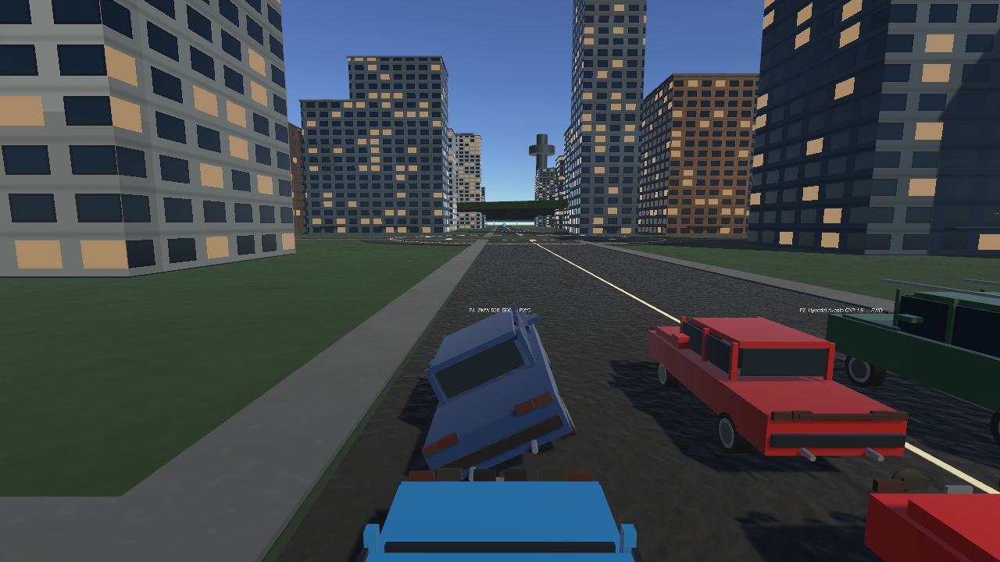
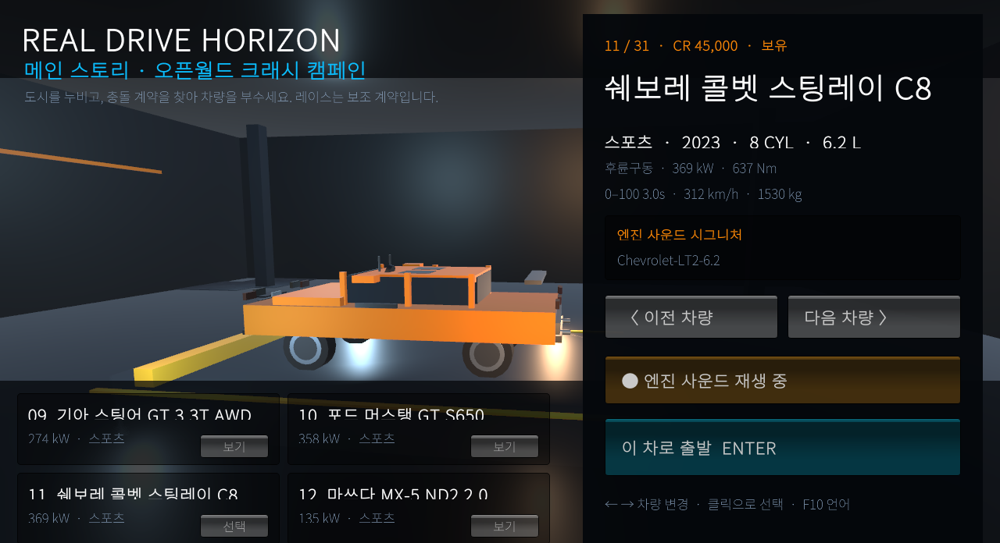
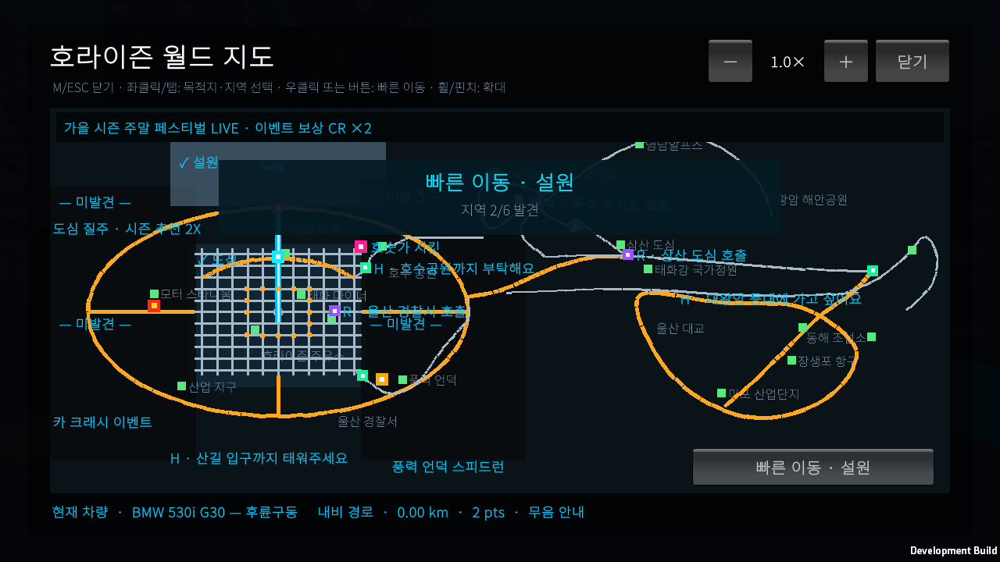

과정이 보이는 파손
충격 크기에 따라 긁힘, 유리 파손, 부품 이탈과 시스템 손상이 누적됩니다. 파손은 단순 점수 효과가 아니라 주행과 경제에 연결됩니다.
개발 중 WINDOWS · UNITY
자유로운 차량 파손을 중심에 둔 오픈월드 크래시 드라이빙 게임. 도시와 지역을 마음대로 달리고, 충돌의 흔적과 수리비까지 다음 선택으로 이어집니다.

RealDrive Horizon의 메인 스토리는 자유로운 차량 파손입니다. 정해진 코스만 반복하는 대신 도심 교통과 지역 도로를 돌아다니며 충돌을 만들고, 차체·유리·부품·타이어에 남은 손상을 직접 확인합니다.
충격 크기에 따라 긁힘, 유리 파손, 부품 이탈과 시스템 손상이 누적됩니다. 파손은 단순 점수 효과가 아니라 주행과 경제에 연결됩니다.
크래시 이벤트와 지역 레이스는 상금을 주지만, 종료 후에는 파손에 비례한 수리비를 냅니다. 크게 부술수록 다음 선택의 대가도 커집니다.
도심·숲·농지·설원·우림 해안·선랜드의 6개 지역을 처음 방문하면 보상을 받고, 발견한 지역은 지도에서 안전하게 빠른 이동할 수 있습니다.
금요일 18시부터 월요일 05시까지 주말 페스티벌이 열립니다. 계절 추천 이벤트가 바뀌고 레이스·크래시·택시·라이드 보상이 2배가 됩니다.


게임 기획과 디렉션, 차량 물리·파손 시스템, 오픈월드 콘텐츠, 한국어/영어 및 키보드·터치 UX, 저장 경제, 자동 QA와 Windows 릴리스 파이프라인을 설계하고 구현하고 있습니다.